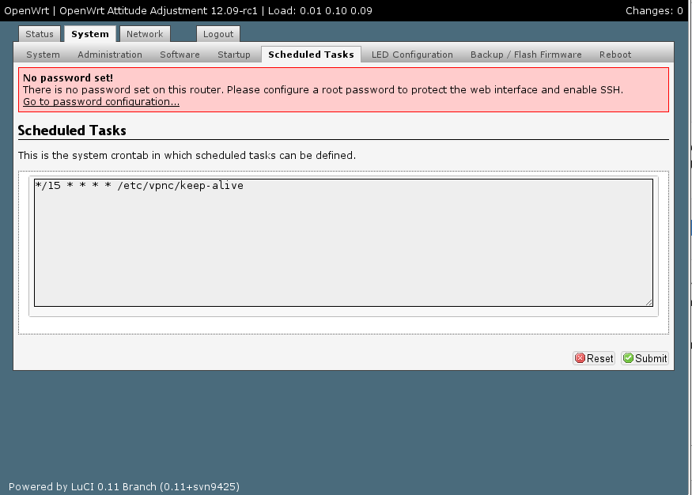
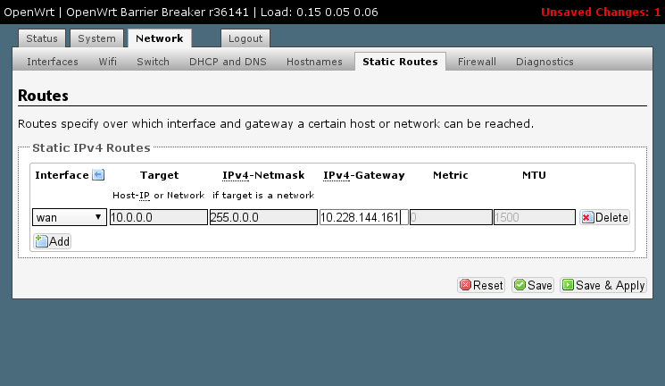

<!DOCTYPE html>
<html lang="en">
  <head>
    <!-- Meta, title, CSS, favicons, etc. -->
    <meta charset="utf-8" />
    <meta name="viewport" content="width=device-width, initial-scale=1.0" />
    <meta name="description" content="Tutorial de configuración de un túnel Cisco IPSEC (vpnc) con OpenWRT" />
    <meta name="author" content="David Rubert" />

    <title>Tutorial de configuración de un túnel Cisco IPSEC (vpnc) con OpenWRT</title>

    <!-- Bootstrap core CSS -->
    <link href="assets/css/bootstrap.css" rel="stylesheet" />

    <!-- Documentation extras -->
    <link href="assets/css/openwrt.css" rel="stylesheet" />
    <link href="assets/js/google-code-prettify/prettify.css" type="text/css" rel="stylesheet" />
    <script type="text/javascript" src="assets/js/google-code-prettify/prettify.js"></script>

    <!-- HTML5 shim and Respond.js IE8 support of HTML5 elements and media queries -->
    <!--[if lt IE 9]>
    <script src="assets/js/html5shiv.js"></script>
    <script src="assets/js/respond/respond.min.js"></script>
    <![endif]-->

    <!-- Favicons -->
    <link rel="apple-touch-icon-precomposed" sizes="144x144" href="assets/ico/apple-touch-icon-144-precomposed.png" />
    <link rel="apple-touch-icon-precomposed" sizes="114x114" href="assets/ico/apple-touch-icon-114-precomposed.png" />
    <link rel="apple-touch-icon-precomposed" sizes="72x72" href="assets/ico/apple-touch-icon-72-precomposed.png" />
    <link rel="apple-touch-icon-precomposed" href="assets/ico/apple-touch-icon-57-precomposed.png" />
    <link rel="shortcut icon" href="assets/ico/favicon.png?v=2" />

    <!-- Place anything custom after this. -->
  </head>
  <body onload="prettyPrint()" class="bs-docs-docs" data-spy="scroll" data-target=".bs-docs-sidebar">

    <!-- Docs nav -->
    <div class="bs-docs-sidebar">
      <h3 class="bs-docs-sidenav-heading"><a href="/">OpenWRT + VPNC</a></h3>
      <ul class="nav bs-docs-sidenav">
        <li><a href="#intro">Introducción</a></li>
        <li><a href="#consideraciones-iniciales">Consideraciones iniciales</a></li>
        <li><a href="#requisitos-previos">Requisitos previos</a></li>
        <li>
          <a href="#instalar-vpnc">Instalar VPNC</a>
          <ul class="nav">
            <li><a href="#instalar-nano">Instalar nano (opcional)</a></li>
          </ul>
        </li>
        <li>
          <a href="#vpnc-conf">Configurar VPNC</a>
          <ul class="nav">
            <li><a href="#masquerade">Enmascarando las conexiones</a></li>
            <li><a href="#primer-tunel">Primer túnel</a></li>
          </ul>
        </li>
        <li><a href="#el-arranque">Habilitar en el arranque</a></li>
        <li><a href="#comprobar-estado">Estado del túnel</a></li>
        <li><a href="#enrutar-subredes">Enrutar subredes fuera del túnel</a></li>
        <li><a href="#replicar-montaje">Replicando el montaje</a></li>
        <li><a href="#referencias">Referencias</a></li>
        <li><a href="#acerca-de">Acerca de este tutorial</a></li>
        <li><a href="#comentarios">Dudas, comentarios...</a></li>
      </ul>
    </div>

    <!-- Page content -->
    <div class="bs-docs-container">

      <!-- Welcome
      ================================================== -->
      <div id="intro" class="bs-docs-section-header">
        <h1>OpenWRT + VPNC</h1>
        <p class="lead">Este tutorial es una guía paso a paso para configurar un router con <b>OpenWRT</b> de manera que establezca y conecte un túnel <b>Cisco IPSEC</b> dentro del propio dispositivo, permitiendo así que todos los clientes del router tengan conectividad con el otro extremo del túnel sin necesidad de habilitarlo de manera individual.</p>
      </div>

      <!-- Consideraciones iniciales
      ================================================== -->
      <div id="consideraciones-iniciales" class="bs-docs-section">
        <div class="page-header">
          <h2>Consideraciones iniciales</h2>
        </div>
        <p class="lead">Antes de continuar vamos a referenciar a la documentación de algunos conceptos previos que deberemos conocer para tener claro qué estamos haciendo:</p>
        <div class="bs-docs-example bs-docs-example-type">
          <ul>
            <li><a href="http://es.wikipedia.org/wiki/Red_privada_virtual">Definición de Red Privada Virtual (<i>VPN</i>)</a>.</li>
            <li><a href="http://es.wikipedia.org/wiki/OpenWrt">Descripción del proyecto <strong>OpenWRT</strong></a>.</li>
            <li><a href="http://tombatossals.github.com/instalar-openwrt/">Tutorial anterior</a> sobre cómo instalar <strong>OpenWRT</strong> en nuestro router.</li>
          </ul>
        </div>
        <br />
        <p>Las VPN's de <b>Cisco</b> son un tipo específico de VPN's a las cuales podemos conectar de manera nativa desde <b>MacOSX</b> o cualquier dispositivo basado en <b>iOS</b> <i>(ej. iPhone, iPad)</i>. Desde un sistema operativo basado en <b>Windows</b> necesitaremos hacer uso de un software de terceros, como por ejemplo el <a href="http://en.wikipedia.org/wiki/Cisco_Systems_VPN_Client">cliente Cisco de VPN</a> <i>(Abandonado y sin soporte)</i>, o el cliente VPN de <a href="https://www.shrew.net/download">Shrew Soft</a>. Desde un sistema operativo <b>Linux</b> tenemos el cliente <a href="http://www.unix-ag.uni-kl.de/~massar/vpnc/">vpnc</a>, que será el que utilizaremos en nuestro router para iniciar el túnel.</p>
        <p>Aunque he intentado orientar el tutorial a un perfil de usuario que se inicia en el manejo de <b>OpenWRT</b>, la dificultad para llevarlo a caba es inevitable ya que no disponemos de un apartado en interfaz web de <b>LuCI</b> para configurar el túnel <b>vpnc</b>. Por tanto muchos de los pasos de configuración se deben realizar desde línea de comandos.</p>
        <p>Por hacer una estimación del sudor que nos costará realizar los pasos propuestos por este tutorial, la dificultad podemos cuantificarla en <span class="label label-warning">Media-Alta</span> si tienes ciertos conocimientos previos de <b>redes informáticas</b> y de <b>Linux</b>, o de <span class="label label-danger">Muy Alta</span> si no los tienes. Por favor, utiliza con cautela esta información y hazte responsable de los beneficios o perjuicios que este tutorial pueda llevar a tu router. <b>Paz y amor.</b> :)</p>

      </div>

      <!-- Requisitos previos
      ================================================== -->
      <div class="bs-docs-section" id="requisitos-previos">
        <div class="page-header">
          <h2>Requisitos previos</h2>
        </div>
        <p class="lead">Definamos los elementos hardware y software que necesitaremos.</p>
        <h3 style="margin-top: 0;">1. Un router con <b>OpenWRT</b> ya instalado y con conexión a internet</h3>
        <p class="justify">Si no tienes todavía instalado <b>OpenWRT</b> en el router <a href="http://tombatossals.github.com/instalar-openwrt/">aquí</a> tienes un tutorial sobre cómo instalarlo. La conexión a internet inicial es necesaria a la hora de configurar el router para poder descargar e instalar el programa <b>vpnc</b>.</p>
        <h3>2. Un PC con un programa de acceso a línea de comandos remota <b>SSH</b></h3>
        <div class="row">
          <div class="col-span-9">
            <p class="justify">Vamos a tener que conectarnos por línea de comandos a nuestro router, así que necesitaremos un cliente de acceso remoto en línea de comandos. En <b>Linux</b> y <b>MacOSX</b> tenemos disponible el comando <i>ssh</i> ya que viene incluido con el proprio sistema operativo. En un sistema <b>Windows</b> necesitaremos instalar un programa adecuado para esta misión. Te recomiendo que descargues y utilices <a href="http://www.chiark.greenend.org.uk/~sgtatham/putty/download.html">PuTTY</a>. No es el objetivo de este tutorial explicar cómo funciona un programa de conexión a terminal remota, así que si no tienes claro cómo funciona te recomiendo que busques por internet uno de los muchos tutoriales que ya lo explican.</p>
          </div>
          <div class="col-span-3">
            <a href="http://www.chiark.greenend.org.uk/~sgtatham/putty/download.html"></a>
          </div>
        </div>
        <h3>3. Datos de conexión y credenciales a una VPN Cisco</h3>
        <p>El proveedor de servicios tiene que haberos facilitado los datos de conexión con el <b>nombre de máquina o IP</b> del terminador de túneles, el <b>nombre de usuario</b> y la <b>contraseña</b>.</p>
        <br />
      </div>

      <!-- Instalar VPNC
      ================================================== -->
      <div class="bs-docs-section" id="instalar-vpnc">
        <div class="page-header">
          <h2>Instalar VPNC</h2>
        </div>
        <p class="lead">Empezamos nuestra andadura conectándonos a la lína de comandos del router y descargando e instalando el programa <i>vpnc</i> que nos va a permitir establecer la conexión remota al túnel. Para ello utilizaremos la herramienta de gestión de software que nos proporciona <i>OpenWRT</i> llamada <b>opkg</b>, muy similar a las herramientas de gestión de software que vienen incluidas en las principales distribuciones <i>Linux</i>.</p>
        <p>Hay que tener muy en cuenta que el espacio de instalación de software que disponemos en el router es muy limitado, así que no debemos abusar de la instalación de software dentro de él. En nuestro caso sólo vamos a instalar <b>vpnc</b> y opcionalmente el editor de textos <b>nano</b>. Fijaros en los comandos que utilizamos para instalar <b>vpnc</b>:</p>
        <ul>
          <li><b>ssh root@192.168.1.1</b>. Es el comando que nos establece una sesión de terminal remoto contra el router. Deberemos introducir nuestra contraseña de acceso al router.</li>
          <li><b>opkg update</b>. Le decimos al router que se descargue la lista de paquetes actualizada de internet, para poder posteriormente instalar la última versión del software que queramos.</li>
          <li><b>opkg install vpnc</b>. Con este comando instalamos vpnc en el router.</li>
        </ul>
        <p>Veamos cómo se visualiza todo esto en pantalla:</p>
        <pre class="prettyprint lang-sh">
[dave@inuik openwrt-vpnc]$ ssh root@192.168.1.1
root@192.168.1.1 password:

BusyBox v1.19.4 (2013-03-31 14:39:19 MST) built-in shell (ash)
Enter 'help' for a list of built-in commands.

  _______                     ________        __
 |       |.-----.-----.-----.|  |  |  |.----.|  |_
 |   -   ||  _  |  -__|     ||  |  |  ||   _||   _|
 |_______||   __|_____|__|__||________||__|  |____|
          |__| W I R E L E S S   F R E E D O M
 -----------------------------------------------------
 BARRIER BREAKER (Bleeding Edge, r36141)
 -----------------------------------------------------
  * 1/2 oz Galliano         Pour all ingredients into
  * 4 oz cold Coffee        an irish coffee mug filled
  * 1 1/2 oz Dark Rum       with crushed ice. Stir.
  * 2 tsp. Creme de Cacao
 -----------------------------------------------------
root@OpenWrt:~# opkg update
Downloading http://downloads.openwrt.org/snapshots/trunk/ar71xx/packages/Packages.gz.
Updated list of available packages in /var/opkg-lists/barrier_breaker.
root@OpenWrt:~# opkg install vpnc
Installing vpnc (0.5.3-3) to root...
Downloading http://downloads.openwrt.org/snapshots/trunk/ar71xx/packages/vpnc_0.5.3-3_ar71xx.ipk.
Installing libgcrypt (1.5.0-1) to root...
Downloading http://downloads.openwrt.org/snapshots/trunk/ar71xx/packages/libgcrypt_1.5.0-1_ar71xx.ipk.
Installing kmod-tun (3.8.3-1) to root...
Downloading http://downloads.openwrt.org/snapshots/trunk/ar71xx/packages/kmod-tun_3.8.3-1_ar71xx.ipk.
Installing vpnc-scripts (20120423-1) to root...
Downloading http://downloads.openwrt.org/snapshots/trunk/ar71xx/packages/vpnc-scripts_20120423-1_ar71xx.ipk.
Configuring kmod-tun.
Configuring libgcrypt.
Configuring vpnc-scripts.
root@OpenWrt:~#
</pre>
        <h3 id="instalar-nano">Instalar el editor de textos <b>nano</b> <span class="label label-warning">Opcional</span></h3>
        <p class="lead">La edición de textos dentro del router se realizar con el programa <b>vi</b>, pero si no lo has utilizado nunca te frustrará el intentar modificar los archivos de configuración con él, ya que es complicado y poco intuitivo. Si estás en esta situación te recomiendo que instales el editor <b>nano</b> antes de continuar.</p>
        <p>Para instalar el editor <b>nano</b> seguimos exactamente los mismos pasos que hemos realizado para instalar <b>vpnc</b>, es decir:</p>
        <ul>
          <li><b>ssh root@192.168.1.1</b>. Es el comando que nos establece una sesión de terminal remoto contra el router. Deberemos introducir nuestra contraseña de acceso al router.</li>
          <li><b>opkg update</b>. Le decimos al router que se descargue la lista de paquetes actualizada de internet, para poder posteriormente instalar la última versión del software que queramos.</li>
          <li><b>opkg install nano</b>. Con este comando instalamos <i>nano</i> en el router.</li>
        </ul>
        <pre class="prettyprint lang-sh">
[dave@inuik openwrt-vpnc]$ ssh root@192.168.1.1
root@192.168.1.1 password:

BusyBox v1.19.4 (2013-03-31 14:39:19 MST) built-in shell (ash)
Enter 'help' for a list of built-in commands.

  _______                     ________        __
 |       |.-----.-----.-----.|  |  |  |.----.|  |_
 |   -   ||  _  |  -__|     ||  |  |  ||   _||   _|
 |_______||   __|_____|__|__||________||__|  |____|
          |__| W I R E L E S S   F R E E D O M
 -----------------------------------------------------
 BARRIER BREAKER (Bleeding Edge, r36141)
 -----------------------------------------------------
  * 1/2 oz Galliano         Pour all ingredients into
  * 4 oz cold Coffee        an irish coffee mug filled
  * 1 1/2 oz Dark Rum       with crushed ice. Stir.
  * 2 tsp. Creme de Cacao
 -----------------------------------------------------
root@OpenWrt:~# opkg update
Downloading http://downloads.openwrt.org/snapshots/trunk/ar71xx/packages/Packages.gz.
Updated list of available packages in /var/opkg-lists/barrier_breaker.
root@OpenWrt:~# opkg install nano
Installing nano (2.2.6-1) to root...
Downloading http://downloads.openwrt.org/snapshots/trunk/ar71xx/packages/nano_2.2.6-1_ar71xx.ipk.
Installing libncurses (5.7-5) to root...
Downloading http://downloads.openwrt.org/snapshots/trunk/ar71xx/packages/libncurses_5.7-5_ar71xx.ipk.
Installing terminfo (5.7-5) to root...
Downloading http://downloads.openwrt.org/snapshots/trunk/ar71xx/packages/terminfo_5.7-5_ar71xx.ipk.
Configuring terminfo.
Configuring libncurses.
Configuring nano.
root@OpenWrt:~#
</pre>
      </div>

      <!-- Configurando VPNC
      ================================================== -->
      <div class="bs-docs-section" id="vpnc-conf">
        <div class="page-header">
          <h2>Configurando VPNC. Archivo <i>vpnc.conf</i></h2>
        </div>
        <p class="lead">Posteriormente a la instalación de <i>vpnc</i> deberemos configurarlo, cosa que realizaremos mediante el archivo de configuración correspondiente. Simplemente editando un archivo ya podremos tener el túnel arrancado y funcionando en nuestro sistema.</p>
        <p>Este tutorial no abarca la parte de aprendizaje del editor de textos utilizado en el router. Simplemente comentarte que existe como opción nativa el <a href="http://es.wikipedia.org/wiki/Vi">vi</a> y si te resulta demasiado complicado yo te propongo instalar y utilizar <a href="http://es.wikipedia.org/wiki/Nano_(editor_de_texto)">nano</a>.</p>
        <p>Debemos editar el archivo <i>/etc/vpnc/default.conf</i> para introducir los datos del terminador de túneles y las credenciales de usuario y de grupo. Supongamos que disponemos de las siguientes credenciales para ver cómo deberíamos completar el archivo de configuración:</p>
        <ul>
          <li>Máquina terminadora de túneles: <b>vpn-server.uji.es</b>.</li>
          <li>Nombre de grupo: <b>UJI</b></li>
          <li>Contraseña de grupo: <b>12345678</b></li>
          <li>Nombre de usuario: <b>johnsmith</b></li>
          <li>Contraseña de usuario: <b>pocahontas</b></li>
        </ul>
        <p>Con esos datos editaríamos el archivo <i>/etc/vpnc/default.conf</i> mediante el siguiente comando:</p>
        <ul>
          <li>vi /etc/vpnc/default.conf</li>
        </ul>
        <p>Si queremos utilizar <i>nano</i> este sería el comando:</p>
        <ul>
          <li>nano /etc/vpnc/default.conf</li>
        </ul>

        <p>Por tanto, volveríamos a acceder al router por <i>ssh</i>, ejecutaríamos el comando correspondiente y rellenaríamos el archivo con la siguiente información:</p>
        <pre class="prettyprint lang-sh">
IPSec gateway vpn-server.uji.es
IPSec ID UJI
IPSec secret 12345678
Xauth username johnsmith
Xauth password pocahontas
</pre>
        <h3 id="masquerade">Enmascarando las conexiones</h3>
        <p class="lead">Tenemos ya configurado el túnel y si lo arrancáramos funcionaría, pero hay una cosa que nos hemos dejado, y es que queremos que todas las peticiones de cacharros conectados al router (teléfonos, tablets, ordenadores, etc.) que salgan a internet a través del túnel se <b>enmascaren</b>, al igual que se hace cuando las peticiones sales a través del puerto <i>WAN</i>.</p>
        <p>La solución para esto es aplicar unas reglas de <i>iptables</i> que enmascaren las peticiones de IP's de nuestra red privada justo cuando el túnel se haya arrancado. Para conseguirlo editaremos el archivo <i>/etc/vpnc/post-connect.d/masquerade</i> y le añadiremos las siguientes líneas:</p>
        <pre class="prettyprint lang-sh">
iptables -A forwarding_rule -o tun0 -j ACCEPT
iptables -A forwarding_rule -i tun0 -j ACCEPT
iptables -t nat -A postrouting_rule -o tun0 -j MASQUERADE
</pre>
        <h3 id="primer-tunel">Establecimiento del primer túnel</h3>
        <p class="lead">Llegados a este punto, si todo ha ido bien, ya deberíamos ser capaces de establecer el primer túnel. Comprobémoslo. Para ello entraremos al router y ejecutaremos el comando <i>vpnc</i>, sólo con ello se debería establecer la comunicación cifrada con el terminador de túneles y todo nuestro tráfico se debería enrutar a través del nuevo interface <i>tun0</i>.</p>
        <pre class="prettyprint lang-sh">
root@OpenWrt:/# vpnc
VPNC started in background (pid: 3067)...
root@OpenWrt:/# ip address list
1: lo: <LOOPBACK,UP,LOWER_UP> mtu 16436 qdisc noqueue state UNKNOWN
    link/loopback 00:00:00:00:00:00 brd 00:00:00:00:00:00
    inet 127.0.0.1/8 scope host lo
2: eth0: <BROADCAST,MULTICAST,UP,LOWER_UP> mtu 1500 qdisc pfifo_fast master br-lan state UP qlen 1000
    link/ether a0:f3:c1:81:fd:ad brd ff:ff:ff:ff:ff:ff
3: eth1: <BROADCAST,MULTICAST,UP,LOWER_UP> mtu 1500 qdisc pfifo_fast state UP qlen 1000
    link/ether a0:f3:c1:81:fd:af brd ff:ff:ff:ff:ff:ff
    inet 192.168.111.250/24 brd 192.168.111.255 scope global eth1
5: br-lan: <BROADCAST,MULTICAST,UP,LOWER_UP> mtu 1500 qdisc noqueue state UP
    link/ether a0:f3:c1:81:fd:ad brd ff:ff:ff:ff:ff:ff
    inet 192.168.1.1/24 brd 192.168.1.255 scope global br-lan
38: tun0: <POINTOPOINT,MULTICAST,NOARP,UP,LOWER_UP> mtu 1412 qdisc pfifo_fast state UNKNOWN qlen 500
    link/none
    inet 150.128.131.11/32 scope global tun0
root@OpenWrt:/# ip route list
default dev tun0  scope link
150.128.131.0/24 dev tun0  scope link
150.128.197.67 via 192.168.111.1 dev eth1  src 192.168.111.250
192.168.1.0/24 dev br-lan  proto kernel  scope link  src 192.168.1.1
192.168.111.0/24 dev eth1  proto kernel  scope link  src 192.168.111.250
root@OpenWrt:/# ping www.google.es
PING www.google.es (173.194.34.248): 56 data bytes
64 bytes from 173.194.34.248: seq=0 ttl=57 time=37.351 ms
64 bytes from 173.194.34.248: seq=1 ttl=57 time=54.150 ms
64 bytes from 173.194.34.248: seq=2 ttl=57 time=36.188 ms
          </pre>
        </div>

      <!-- Habilitar el túnel en cada arranque del router
      ================================================== -->
      <div class="bs-docs-section" id="el-arranque">
        <div class="page-header">
          <h2>Habilitar el túnel en cada arranque del router</h2>
        </div>
        <p class="lead">Bien, pues ya hemos conseguido arrancar el túnel deltro del enrutador, y que los dispositivos conectados al router salgan por él, pero... si reiniciamos el router el túnel no arrancará sólo. Tenemos que indicar al router que con cada nuevo arranque queremos que lance ese comando <i>vpnc</i> por nosotros sin tenernos que volver a conectar y hacerlo manualmente. Vamos a ver cómo.</p>
        <p>En este caso lo que deberemos crear es un script de arranque para el programa <i>vpnc</i> y habilitarlo en el sistema. Para ello, primero editamos el archivo <i>/etc/vpnc/start-script</i> e introducimos las siguientes líneas:</p>
        <pre class="prettyprint lang-sh">
#!/bin/sh /etc/rc.common
START=75
STOP=01

start() {
  vpnc
}

stop() {
  vpnc-disconnect
}
</pre>
      <p>Ahora deberemos realizar 3 pasos más, primero que nada dar permisos de ejecución al nuevo script, despues enlazarlo en el directorio de scripts de arranque del sistema (<i>/etc/init.d</i>), y posteriormente habilitar este servicio en cada arranque del router. Realizamos estas dos operaciones con los siguientes comandos:</p>
      <pre class="prettyprint lang-sh">
chmod u+x /etc/vpnc/start-script
ln -s /etc/init.d/vpnc /etc/vpnc/start-script
/etc/init.d/vpnc enable
</pre>

      <p>La razón por la cual no hemos creado directamente el archivo en el directorio <i>/etc/init.d</i> es porque así conseguimos que nuestros archivos se mantengan cuando realizamos una copia de seguridad de la configuración, tal y como comentaremos en un apartado posterior.</p>
      <p>Si hemos seguido estos pasos correctamente, ya deberíamos poder apagar/encender el router siempre que queramos, ya que el túnel se iniciará con cada arranque del router.</p>
      </div>

      <!-- Estado del túnel
      ================================================== -->
      <div class="bs-docs-section" id="comprobar-estado">
        <div class="page-header">
          <h2>Estado del túnel <span class="label label-warning">Opcional</span></h2>
        </div>
        <p class="lead"><i>¿Qué ocurre si el túnel se desconecta sólo al cabo de un rato?</i> Pues que no rearrancará, ya que sólo iniciamos el túnel cuando apagamos/encendemos el dispositivo. Para solucionar esta problemática utilizaremos un pequeño script que ejecutaremos cada 15 minutos y que levantará de nuevo el túnel si detecta que éste no está en funcionamiento.</p>
        <p>Vamos a crear el archivo <i>/etc/vpnc/keep-alive</i> con este contenido:</p>
        <pre class="prettyprint lang-sh">
#!/bin/sh

[ ! -f /etc/rc.d/S99vpnc ] && exit 0

ping -q -c 1 8.8.8.8 2>&1 >/dev/null
if [ $? = 1 ]; then
  /etc/init.d/vpnc stop
  sleep 5
  /etc/init.d/vpnc start
fi
</pre>
        <p>Básicamente, probamos a hacer ping a la IP del DNS de <i>Google</i> y si no responde, es que el túnel no está en marcha. Podéis personalizar este script como más os convenga, dependiendo de a dónde os dé conectividad el túnel. Le damos ahora permisos de ejecución, y lo habilitamos en el <a href="http://es.wikipedia.org/wiki/Cron_(Unix)">cron</a> del sistema cada 15 minutos:</p>
        <pre class="prettyprint lang-sh">
chmod u+x /etc/vpnc/keep-alive
</pre>

        <div class="row">
          <div class="col-span-12">
            
          </div>
        </div>
      </div>

      <!-- Enrutar subredes fuera del túnel
      ================================================== -->
      <div class="bs-docs-section" id="enrutar-subredes">
        <div class="page-header">
          <h2>Enrutar subredes fuera del túnel <span class="label label-warning">Opcional</span></h2>
        </div>
        <p class="lead">Tal vez nos interese que las conexiones a determinadas subredes no salgan a través del túnel, sino a través del interfaz <i>WAN</i> por defecto. Esto es muy útil si estamos conectados a <a href="http://guifi.net">guifi.net</a>, queremos que el tráfico a Internet salga a través del túnel, pero cualquier acceso a las IP's de <i>guifi.net</a> queremos encaminarlo a través del interfaz <i>WAN</i> de nuestro router.</p>
        <p>Para ello, deberemos acceder a la siguiente sección de <b>LuCI</b>, pero primero teniendo claro cuál es la IP del router que le da salida a nuestro router, no sé si me explico :D. El gateway por el cual conecta nuestro router y por el cuál queremos enviar el tráfico no encapsulado por el túnel.</p>
        <div class="row">
          <div class="col-span-12">
            
          </div>
        </div>

      <!-- Replicando el montaje
      ================================================== -->
      <div class="bs-docs-section" id="replicar-montaje">
        <div class="page-header">
          <h2>Replicando el montaje</h2>
        </div>
        <p class="lead">Menuda currada nos acabamos de pegar para conseguir que un túnel se establezca de manera automática dentro del propio router. Ahora imaginemos que tenemos que configurar otro dispositivo, o que nuestro hermoso router deja de funcionar y tenemos que volver a configurar uno nuevo. Vaya historia, ¿no?</p>
        <p>Para estos casos se inventa el proceso de <i>backup/restore</i> de <i>OpenWRT</i> que nos permite clonar toda la configuración personalizada que hemos estado dando a nuestro dispositivo para aplicarla en nuevos dispositivos, con lo que las modificaciones posteriores que tengamos que realizar serán mínimas.</p>
        <div class="row">
          <div class="col-span-12">
            
          </div>
        </div>
        <p>Simplemente pulsando en el botón de <span class="label label-success">Generate archive</span> nos descargaremos una copia de seguridad de toda la configuración del router. Salvo un par de detalles que ahora comentaremos, simplemente restaurando ese archivo en otro router (apartado <span class="label label-warning">Restore backup</span>) tendremos una copia exacta de toda la configuración que habíamos realizado previamente.</p>
        <hr />
        <p>Una vez restaurada la configuración en el nuevo dispositivo nos faltarán 2 pasos: Instalar VPNC en el nuevo router y enlazar el archivo del script de arranque en el directorio correspondiente. Pero todo esto ya sabemos hacerlo, ¿no? Serían estos comandos en una sesión del router:</p>
        <pre class="prettyprint lang-sh">
opkg update
opkg install vpnc
ln -s /etc/init.d/vpnc /etc/vpnc/start-script
/etc/init.d/vpnc enable
</pre>
      </div>

      <!-- Referencias
      ================================================== -->
      <div class="bs-docs-section" id="referencias">
        <div class="page-header">
          <h2>Referencias</h2>
        </div>
        <p class="lead">Podéis encontrar un tutorial similar, del cuál yo he aprendido y sacado conceptos para realizar éste, aquí:</p>
        <ul>
          <li><a href="https://roure.act.uji.es/wiki/public/recetas/openwrt-tp-link740">https://roure.act.uji.es/wiki/public/recetas/openwrt-tp-link740</a></li>
        </ul>
      </div>

      <!-- Acerca de este tutorial
      ================================================== -->
      <div class="bs-docs-section" id="acerca-de">
        <div class="page-header">
          <h2>Acerca de este tutorial</h2>
        </div>
        <p><a rel="license" href="http://creativecommons.org/licenses/by-sa/3.0/deed.es_CO"></a> <a href="https://plus.google.com/100184619238119414805/posts">+ David Rubert</a></p>
        <p class="lead">Este es el tercero de una serie de tutoriales dedicados a <strong>guifi.net</strong> y <strong>OpenWRT</strong>, dentro de una temática relacionada con las <strong>redes abiertas</strong>. Puedes acceder a las fuentes de este tutorial aquí:</p>
        <ul>
          <li><a href="https://github.com/tombatossals/instalar-openwrt">https://github.com/tombatossals/instalar-openwrt</a></li>
        </ul>
        <br />
        <p>Si quieres consultar los anteriores tutoriales, puedes encontrarlos aquí:</p>
        <ul>
          <li><a href="http://tombatossals.github.com/openwrt-repetidor-wireless">OpenWRT en modo repetidor Wireless</a></li>
          <li><a href="http://tombatossals.github.com/instalar-openwrt">Instalar OpenWRT</a></li>
        </ul>
      </div>

      <!-- Dudas, comentarios, sugerencias...
      ================================================== -->
      <div class="bs-docs-section" id="comentarios">
        <div class="page-header">
          <h2>Dudas, comentarios, sugerencias...</h2>
        </div>
        <div id="disqus_thread"></div>
        <script type="text/javascript">
          /* * * CONFIGURATION VARIABLES: EDIT BEFORE PASTING INTO YOUR WEBPAGE * * */
          var disqus_shortname = 'openwrt-vpnc'; // required: replace example with your forum shortname

          /* * * DON'T EDIT BELOW THIS LINE * * */
          (function() {
            var dsq = document.createElement('script'); dsq.type = 'text/javascript'; dsq.async = true;
            dsq.src = '//' + disqus_shortname + '.disqus.com/embed.js';
            (document.getElementsByTagName('head')[0] || document.getElementsByTagName('body')[0]).appendChild(dsq);
          })();
        </script>
        <noscript>Please enable JavaScript to view the <a href="http://disqus.com/?ref_noscript">comments powered by Disqus.</a></noscript>
        <a href="http://disqus.com" class="dsq-brlink">comments powered by <span class="logo-disqus">Disqus</span></a>
      </div>
    </div>

    <!-- JS and analytics only. -->
    <!-- Bootstrap core JavaScript
    ================================================== -->
    <!-- Placed at the end of the document so the pages load faster -->
    <script src="assets/js/jquery.js"></script>
    <script src="assets/js/bootstrap-transition.js"></script>
    <script src="assets/js/bootstrap-alert.js"></script>
    <script src="assets/js/bootstrap-modal.js"></script>
    <script src="assets/js/bootstrap-dropdown.js"></script>
    <script src="assets/js/bootstrap-scrollspy.js"></script>
    <script src="assets/js/bootstrap-tab.js"></script>
    <script src="assets/js/bootstrap-tooltip.js"></script>
    <script src="assets/js/bootstrap-popover.js"></script>
    <script src="assets/js/bootstrap-button.js"></script>
    <script src="assets/js/bootstrap-collapse.js"></script>
    <script src="assets/js/bootstrap-carousel.js"></script>
    <script src="assets/js/bootstrap-typeahead.js"></script>
    <script src="assets/js/bootstrap-affix.js"></script>
    <script src="assets/js/holder/holder.js"></script>
    <script src="assets/js/application.js"></script>
  </body>
</html>
